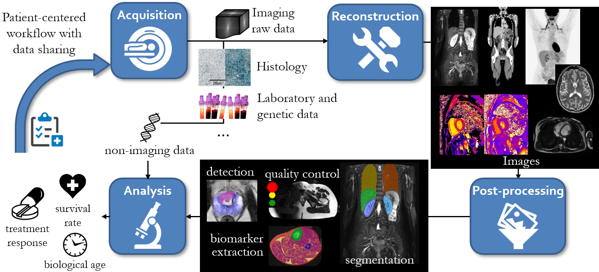

Research
 Our aim is to advance methods and applications for processing and analysis of medical imaging data using machine learning methods.
Our aim is to advance methods and applications for processing and analysis of medical imaging data using machine learning methods.
Specifically, we are working on the analysis of multi-parametric MRI, PET/MRI and PET/CT data aiming for functional characterization of tissues and tumors in vivo.
Our second focus is the development and implementation of a patient-centered workflow including novel imaging sequences, reconstruction techniques, image registration methods and methods for image quality assessment, image enhancement and automated image analysis in epidemiological MRI studies.
The third focus is to provide explainable and human-interpretable methods which enable the integration of machine learning applications into clinical practice.
Research concepts

Patient-centered workflow
In order to provide a personalized treatment, automatic identification of a patient's phenotyp and biological age is required. Based on this information, the most suitable imaging protocol can be selected. Suggestion systems thereby include image-derived features and non-imaging information (initial finding, anamnesis, genetics, laboratory tests). In order to guarantee a reliable image quality, data quality control measures (see automatic medical image quality assessment) are included. Derived predictions can assist in an age-related diagnosis, adpatation of sequence protocols, guided therapy monitoring, treatment response prediction, biomarker identification etc.
Artificial Intelligence based data processing
The application of artificial intelligence (AI) methods in acquisition, reconstruction, post-processing or analysis are investigated. The aim is to provide reliable, robust, specific and sensitive methods. The inclusion of AI into medical data processing can help to improve performance by (but not limited to) increasing precision, boosting quality of service, easing processing and reducing computational times. In the case of e.g. MR motion artifacts: Based on the obtained quality measure in the acquisition, respective artefact-correcting/aware reconstruction and post-processing methods are selected and combined. The acquisition can be steered by an adaptive MR subsampling connected to a network composed of DL-based CS reconstruction for multi-parametric imaging, incorporated motion detection and correction and an organ-specific segmentation with quality assurance.
Automated medical image quality assessment
Assessment of image quality is a prerequisite for further processing in most clinical situations and scientific analysis. In certain situations, when image quality has to be assessed in a short time interval or when data are analyzed by automated methods, image quality assessment has to be performed automatically. To this end, we develop machine learning based methods for identification, localization and quantification of image artifacts in medical images, specifically in whole body MRI.
Automated processing
In the context of large epidemiological studies, manual image analysis is often not feasible due to the overwhelming amount of data. Thus, automated analyses of whole body data is necessary. In order to perform automated analyses, a prerequisite is often the segmentation of target tissues and organs. A major aspect of our work is thus the adaptation and implementation of automated whole body segmentation in the context of large clinical and epidemiological studies using deep-learning approaches.
Medical image translation
The task of translating medical images between different domains has numerous useful applications. One example is the correction and restoration of artifact-corrupted images. Another potential application is the generation of novel image data. We are working on the development and refinement of medical image translation frameworks and their applications. Specifically, we are currently adressing GAN-based motion correction, GAN-based PET attenuation correction and GAN-based image inpainting.